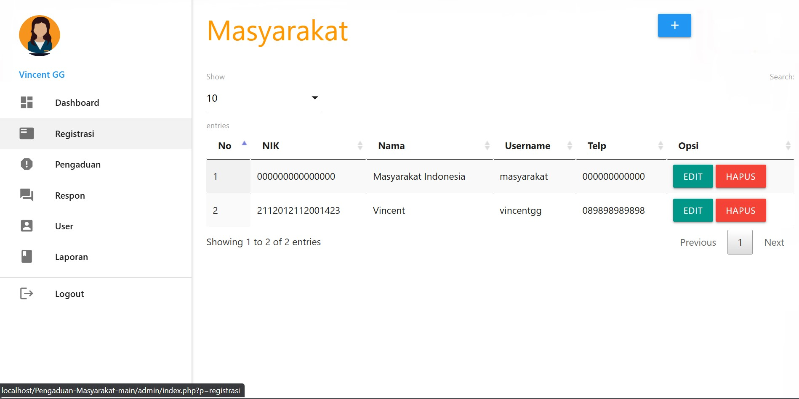
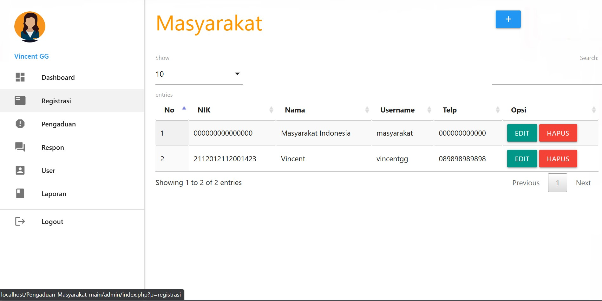

Vincent G Ginting, S.T.
Web Developer & Technology Enthusiast
Selamat datang di portofolio saya! Bagian ini menampilkan proyek-proyek konkret yang telah saya selesaikan, menyoroti keterampilan dan solusi yang saya tawarkan. Semoga Anda mendapatkan gambaran jelas tentang kemampuan saya melalui karya-karya ini.
Sign Language Class

Website Sign Language Class, merupakan sebuah website yang dibuat sebagai sarana untuk bahasa sign language dimana ada pengajar dan pelajar. Website ini menggunakan framework Django, framework ini memudahkan dalam pengembangan website dengan keterampilan yang tinggi. Website ini juga menggunakan JavaScript untuk membuat website responsif dan menampilkan konten yang sesuai dengan layar yang digunakan. Selain itu Saya menggunakan WebRTC sebagai API peer to peer media video dan audio. Saya juga menggunakan MongoDB sebagai database untuk menyimpan data yang dibutuhkan oleh website. Ini adalah Project Akhir Perkuliahan saya bersama tim saya sebagai syarat kelulusan, dimana terdapat 3 role yaitu frontend developer, machine learning engineer dan saya berperan sebagai Backend Developer sekaligus QA Engineer.
Human Resource Management System (HRMS)
Human Resource Management System (HRMS) adalah sebuah sistem yang dirancang untuk mengelola sumber daya manusia dalam sebuah organisasi. Sistem ini mencakup berbagai fitur seperti manajemen data karyawan, penggajian, absensi, dan lain-lain. Dengan menggunakan HRMS, perusahaan dapat meningkatkan efisiensi dan produktivitas dalam mengelola karyawan. Proyek ini dirancang dan dikembangkan menggunakan PHP dan MySQL untuk menyimpan data karyawan. Sistem ini juga menggunakan framework Bootstrap untuk membuat tampilan yang responsif dan menarik. Proyek ini dirancang dan dikembangkan dengan tujuan untuk membantu perusahaan dalam mengelola sumber daya manusia dengan lebih efisien dan efektif. Ini adalah proyek yang saya dan rekan tim saya rancang sebagai projek saat intership di INKOPDIT. Saya berperan sebagai Backend Developer.
Grand Panorama
Grand Panorama adalah sebuah proyek yang bertujuan untuk memberikan pengalaman visual bagi calon penghuni agar mereka dapat melihat ketersediaan rumah hunian di Grand Panorama. Proyek ini dirancang menggunakan PHP dan MySQL untuk mengelola data rumah hunian. Proyek ini juga menggunakan framework Bootstrap untuk membuat tampilan yang responsif dan menarik. Project ini adalah salah satu tugas praktikum perkuliahan yang saya dan rekan tim saya kerjakan.
Web Pengaduan Masyarakat
 

Web Pengaduan Masyarakat adalah sebuah proyek yang bertujuan untuk memberikan pengalaman pengguna dalam memberikan laporan keadaan lapangan dan mengisi laporan masalah yang dialami oleh masyarakat. Proyek ini dirancang menggunakan PHP dan MySQL untuk mengelola data pengaduan dan laporan masalah. Proyek ini juga menggunakan framework Bootstrap untuk membuat tampilan yang responsif dan menarik. Dalam penggunaannya terdapat 3 Role, yaitu Admin, Petugas, dan Masyarakat
Personal Website
The last but not least, personal website ini juga termasuk projek yang saya kerjakan. Personal website ini dirancang menggunakan html dan css sederhana hanya untuk web statis. Proyek ini juga menggunakan framework Bootstrap untuk membuat tampilan yang responsif dan menarik.